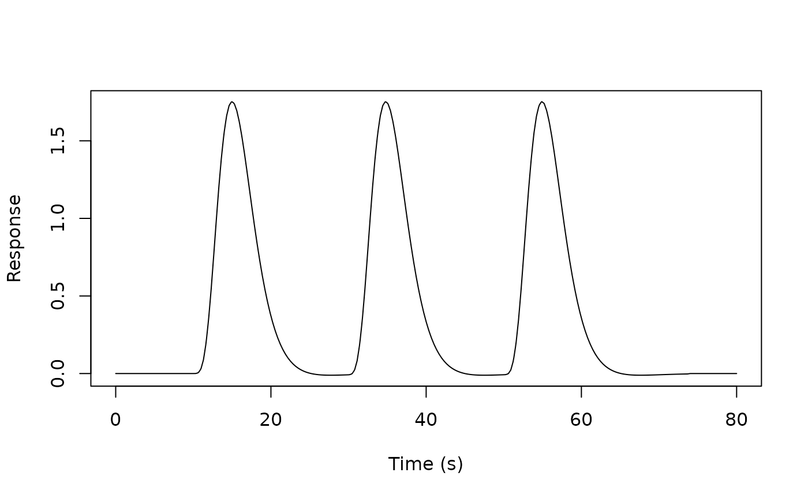

Generic function to evaluate a regressor object over a specified time grid. Different types of regressors may have different evaluation methods.
Usage
evaluate(x, grid, ...)
# S3 method for class 'Reg'
evaluate(
x,
grid,
precision = 0.33,
method = c("conv", "fft", "Rconv", "loop"),
sparse = FALSE,
...
)Arguments
- x
A `Reg` object (or an object inheriting from it, like `regressor`).
- grid
Numeric vector specifying the time points (seconds) for evaluation.
- ...
Additional arguments passed down (e.g., to `evaluate.HRF` in the loop method).
- precision
Numeric sampling precision for internal HRF evaluation and convolution (seconds).
- method
The evaluation method:
"conv" (Default) Uses the C++ direct convolution (`evaluate_regressor_convolution`). Generally safer and more predictable.
"fft" Uses the fast C++ FFT convolution (`evaluate_regressor_fast`). Can be faster but may fail with very fine precision or wide grids. Extremely fine `precision` or wide `grid` ranges may trigger an internal FFT size exceeding ~1e7, which results in an error.
"Rconv" Uses an R-based convolution (`stats::convolve`). Requires constant event durations and a regular sampling grid. Can be faster than the R loop for many events meeting these criteria.
"loop" Uses a pure R implementation involving looping through onsets. Can be slower, especially for many onsets.
- sparse
Logical indicating whether to return a sparse matrix (from the Matrix package). Default is FALSE.
Examples
# Create a regressor
reg <- regressor(onsets = c(10, 30, 50), hrf = HRF_SPMG1)
# Evaluate at specific time points
times <- seq(0, 80, by = 0.1)
response <- evaluate(reg, times)
# Plot the response
plot(times, response, type = "l", xlab = "Time (s)", ylab = "Response")

# Create a regressor
reg <- regressor(onsets = c(10, 30, 50), hrf = HRF_SPMG1)
# Evaluate with default method (conv)
times <- seq(0, 80, by = 0.5)
response <- evaluate(reg, times)
# Try different evaluation methods
response_fft <- evaluate(reg, times, method = "fft")
response_loop <- evaluate(reg, times, method = "loop")
# With higher precision
response_precise <- evaluate(reg, times, precision = 0.1)